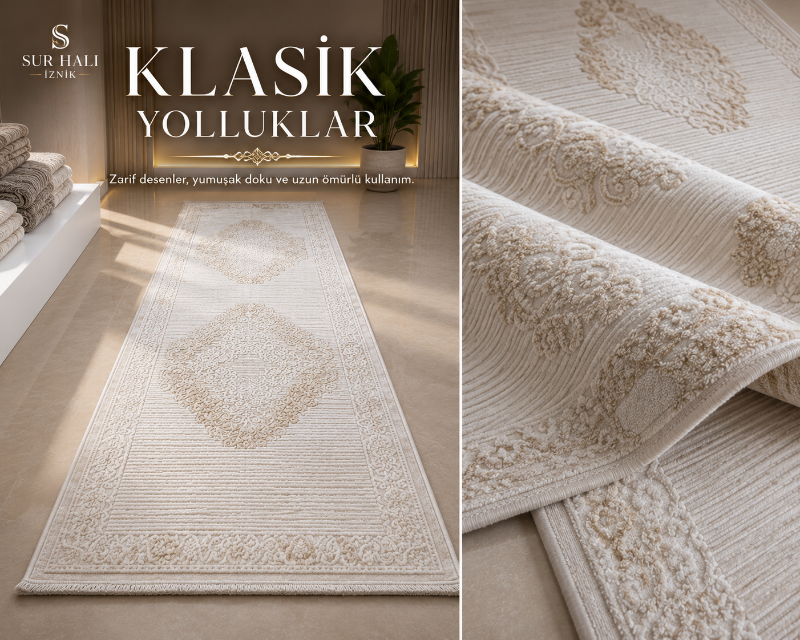
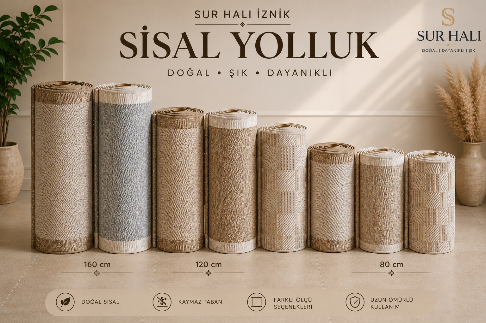
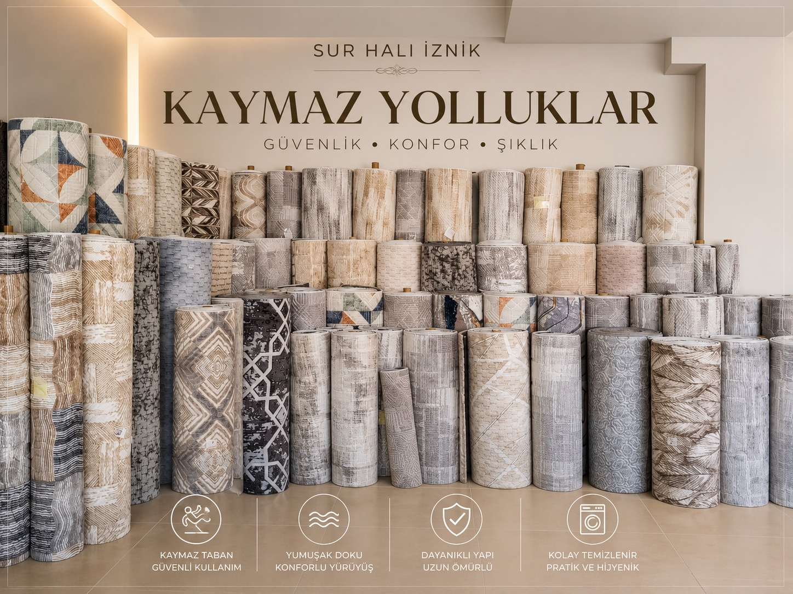

01
Özel Kesim Koleksiyonu
Yaşam alanlarınıza özel ölçü ve tasarımlarla hazırlanan özel kesim halı seçeneklerini inceleyebilirsiniz.
Koleksiyonu İncele →İZNİK'İN HALI MAĞAZASI
Halı, yolluk, kaymaz yolluk ve sisal seçeneklerini keşfedin. Yaşam alanınıza en uygun modeli birlikte bulalım.

ÜRÜN KOLEKSİYONLARIMIZ
Güncel ürünlerimizi inceleyin. Ölçü, fiyat ve stok bilgisi için WhatsApp üzerinden bize ulaşabilirsiniz.
Yaşam alanlarınıza özel ölçü ve tasarımlarla hazırlanan özel kesim halı seçeneklerini inceleyebilirsiniz.
Koleksiyonu İncele →
Salon, oturma odası ve yaşam alanları için farklı desen, renk ve ölçülerde halı seçeneklerini keşfedin.
Koleksiyonu İncele →
Koridor, antre, mutfak ve geçiş alanları için farklı desen ve ölçülerde klasik yolluk seçeneklerini keşfedin.
Koleksiyonu İncele →
Doğal görünümlü, modern yaşam alanlarına uyum sağlayan sisal seçenekleri.
Koleksiyonu İncele →
Günlük kullanıma uygun, pratik ve kaymaz taban seçenekleriyle koridor, antre ve yaşam alanlarınız için farklı yolluk modellerini keşfedin.
Koleksiyonu İncele →HALI SEÇİMİNİ KOLAYLAŞTIRALIM
Odanızın kullanım alanını, dekorasyon tarzını ve tercih ettiğiniz renkleri bize anlatın. Size uygun halı ve yolluk seçeneklerini birlikte değerlendirelim.
Bana Halı ÖnerinSalon, yatak odası, koridor veya mutfak.
Modern, sade, klasik veya doğal görünüm.
WhatsApp üzerinden birlikte değerlendirelim.
SUR HALI
Sur Halı olarak İznik ve çevresindeki müşterilerimize halı ve yolluk seçenekleri sunuyoruz. Amacımız, yaşam alanınıza uygun ürünü seçerken size güvenilir ve samimi bir alışveriş deneyimi yaşatmak.
Ürünlerimizin güncel stok ve fiyat bilgilerini WhatsApp üzerinden öğrenebilir, mağazamıza gelerek seçenekleri yakından inceleyebilirsiniz.
Doğru halı, bir odanın bütün havasını değiştirebilir.
— Sur Halı İznikBİZE ULAŞIN
Adres
Eşrefzade Mahallesi,
Kocaeren Caddesi,
Huzur Sokak No: 16 A/8
İznik / Bursa
Telefon & WhatsApp
0539 636 90 95